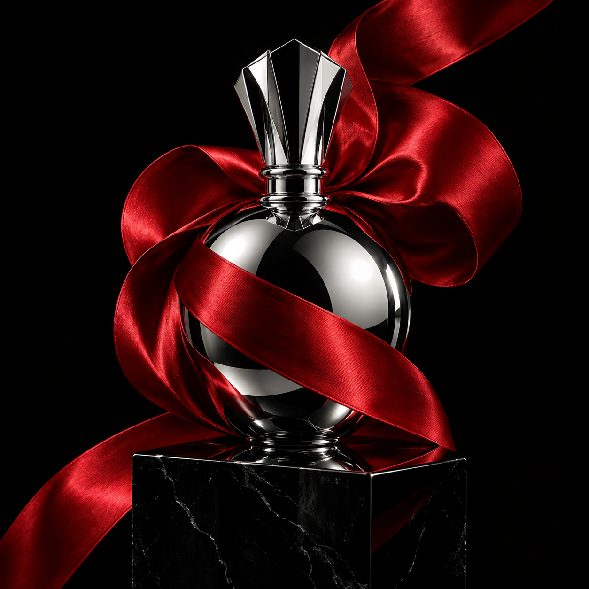
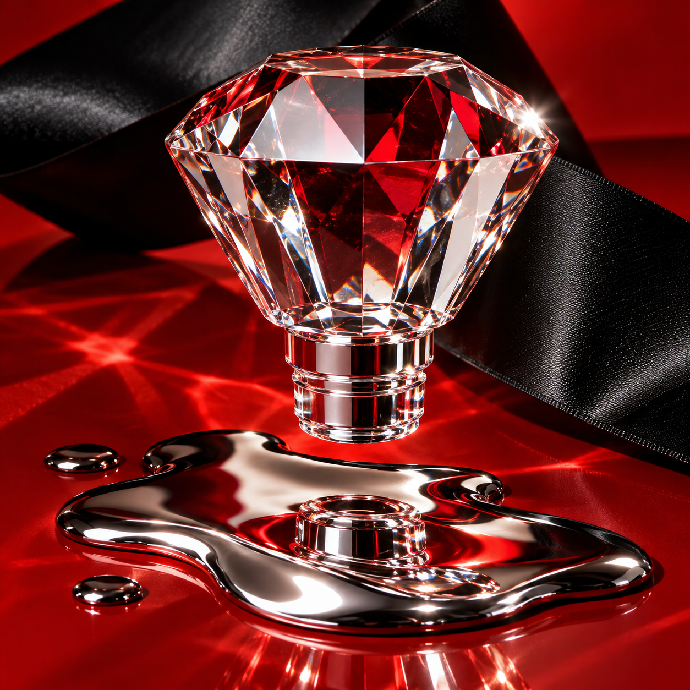

THE DESIRE ISSUE
欲望制造
注意力、品牌与被渴望的理由。
用奢侈品广告的戏剧感，做一本高冲击的品牌表达样书。银色镜面与红色丝带成为图像语言，巨幅字排与整页宣言掌握翻页的节奏。

先让人停下。
再值得留下。
再值得留下。
DESIGN PRINCIPLES
01 / 放大一个主角
标题、产品与短句轮流占据画面中心。阅读有先后，冲击才有落点。
02 / 改变阅读速度
黑页与红页创造停顿，暖白正文页承接解释。每次翻页都是一次节奏变化。
03 / 留下识别线索
色彩、材质、署名与字号关系连续出现，让不同页面属于同一场视觉叙事。
金属、丝带、切面。
两张 AI 生成的广告概念图，用于虚构香氛「无声剧场」。原图及生成提示词保存在项目中。

